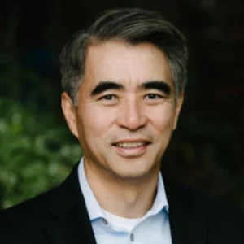

Weijie Yun Abstract
The Secret of Successful Fundraising
Weijie Yun, Founder and Managing Partner, Tyche Partners
As a serial entrepreneur-turned-venture capitalist, Weijie Yun will share his insights into successful fundraising from both entrepreneur and investor’s perspectives. Fundraising is the easiest task in building a startup if you go through the right process. There are three stages of every fundraising: preparation, pitching, and closing. He will share his firsthand experience and the simple do’s and don’ts in each of the fundraising phases.
The Secret of Successful Fundraising
Pathway to Funding
Weijie Yun, Founder and Managing Partner, Tyche Partners
As a serial entrepreneur-turned-venture capitalist, Weijie Yun will share his insights into successful fundraising from both entrepreneur and investor’s perspectives. Fundraising is the easiest task in building a startup if you go through the right process. There are three stages of every fundraising: preparation, pitching, and closing. He will share his firsthand experience and the simple do’s and don’ts in each of the fundraising phases.